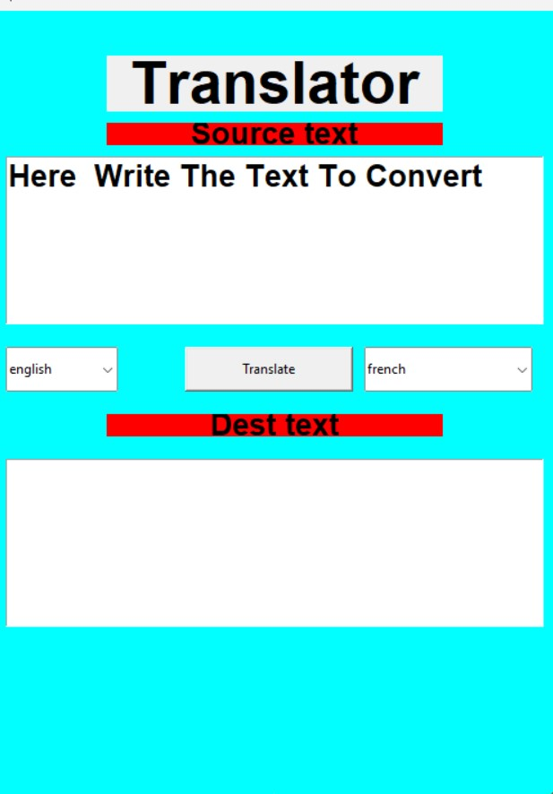

Welcome to my world of learning

My Projects
- Resume collector using swing
- Combinations to clock, stope watch and world clock
- Translator using tkinter in python
Shreya Sharma

Translator

It is just a GUI based project using tkinter in python.
FOR MORE CAPTURES VIEW:
Translator
Birthday invitation
As my birthday is coming , so please come!
invite
CONTACT
ABOUTME